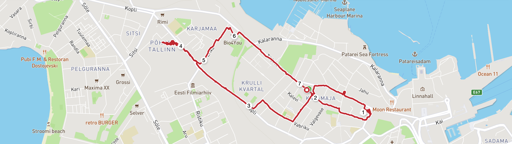
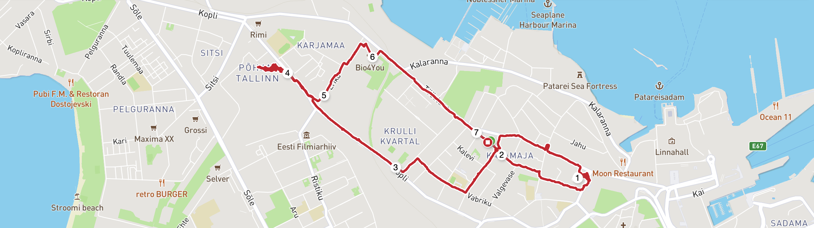
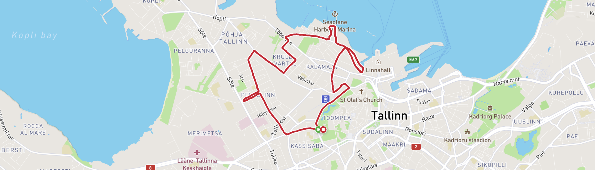
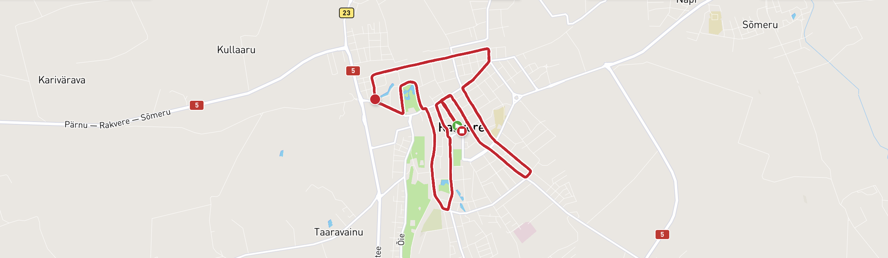

Kalamaja Jooksud
Kalamaja on üks mu lemmikumaid kohti, kus jooksmine on nauditav. Saad joosta 2, 4, 6, 8, 11 või 21 km ja nautida kaunist vaadet merele ja linnale.
ooksmisega alustasin ma aastal 2010. Esimene võistlus oli Mai jooks (7 km). Sealt sain ma selle pisiku ja olen jooksnud sellest ajast alates. Jooksmine on hea nii vaimsele kui füüsilisele tervisele. Olen jooksnud pikalt 10km, siis sealt edasi oli 21km oli mugav samm. See oli see mille peale jäin pikalt mõtlema, et mis siis ,kui jookseks ka täismaratoni. Nii saingi aasta 2018 sügisel see mõte teoks tehtud, seda muidugi Vilniuses, baltimaade kõige mägisemas pealinnas. Jooksen siiani, kuid pikemad distantsid on jäänud minevikku, nüüd tegelen väikeste sörkidega. Uus Ettevõtmine on Väärtuspakkumine koolile, VOCO sörklased- sörgi- ja jalutus kogukond .ste kogukonnast.
Kalamaja on üks mu lemmikumaid kohti, kus jooksmine on nauditav. Saad joosta 2, 4, 6, 8, 11 või 21 km ja nautida kaunist vaadet merele ja linnale.
Tallinna Maraton toimub igal septembril. 10 km distants on hea ajaviide, kui poolmaratoniks pole treenitud.
Rakvere Ööjooks toimub tavaliselt suve lõpus. Distants pakub linna öist võlu ja võimalust joosta pimeduses. Viimastel kordadel on ilm olnud metsik, kuid see üritus on populaarsust kogunud.
Vilniuse Maraton on Baltimaade suurim maraton. Pakub võimalust joosta läbi ajalooliste parkide ja tänavate. Kergelt mägine rada muudab maratoni väljakutsuvaks.